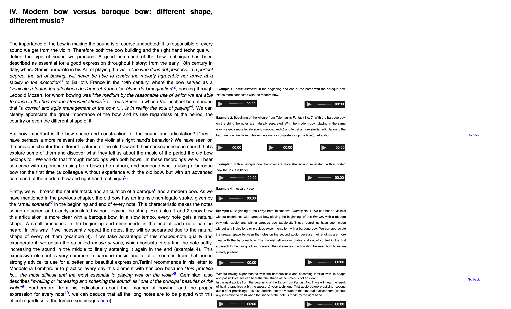
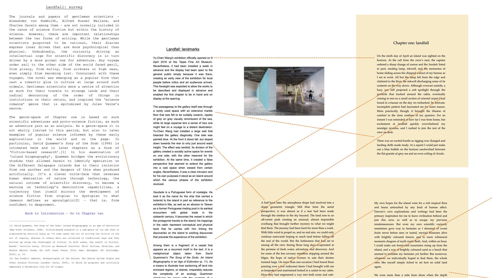

Media Repository / API
Döbereiner and Schipper
January 2020
MODULE: Repository / API
PART I: Repository
Works (current state):
- Individual file upload
- Group of media files
- Reuse of materials between expositions
- Additional meta-data
- Represents a single real-world (art)work, article, project or event on the profile
Reimagining Works as a Media Repository
Uploading Media
- Bulk
- Automatic file type detection
- One click
- Simple media can be upgraded to be a work
Organising Media
- Grouping (sets, hierarchical tree structure)
- Searching
- Sorting by properties
- Creating relationships (by annotation)
- Supports new exposition format
Collaboration
- Media (sets) can be shared
- Permission and ownership management
- Search for works
- Citing
Annotation
- Any media object can annotate another media object
- Meta-data itself is treated as a structured object
- Annotation can point to a location/time within another object
- Pointers depend on the nature of the object
Annotation Types
- Reference: citation, source, example
- Description: meta-data, material, context, time etc..
- Comment: footnote, thoughts, tangents
- Realization: performance of a score/script/plan etc..
- Representation: maps, diagrams, graphics, tables, timeline
- Immediate neighbor
Example 1

Example 2

Example 3

Example 4

Annotation Pointer Types:
- Time (and optional location within): audio and video
- Position: x,y in image
- Character position: text
Part 2: API
Why an API?
- Custom editors and imports (example: text-based editor, madek import)
- Generating "meta" expositions based on content
- Automating administrative tasks (registering large amount of users)
- Export/Backup portal content
- Modular development
- Transparency
- Linking with networks and other repositories